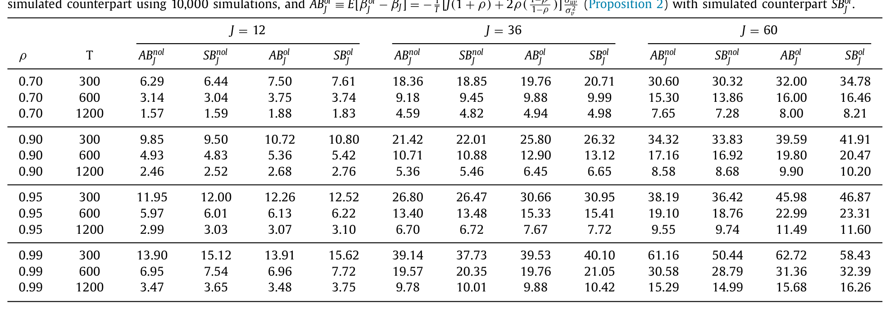
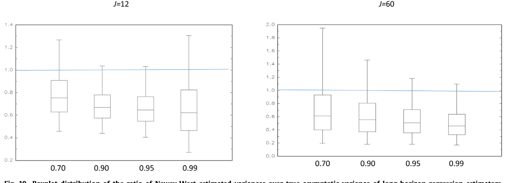
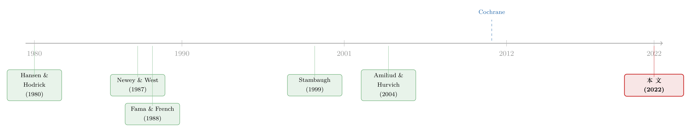

用更多的数据，买来更大的偏差——长期预测回归里那场小样本幻觉
本文读的是 Boudoukh, Israel & Richardson (2022, Journal of Financial Economics)：他们沿着 Stambaugh (1999) 的思路，推导出 J 期长期预测回归 (long-horizon predictive regression) 估计量的小样本偏差闭式解，证明这个偏差是样本量 T、预测期 J 与预测变量持续性 ρ 的明确函数；当 J 较大时偏差近似随 J/T 线性增长。一个反直觉的结论是：用上全部重叠数据的估计量，偏差反而比只用不重叠数据的更大。把这个偏差扣掉之后，「长期收益高度可预测」这一资产定价里最被珍视的「事实」，大部分都消失了。
1 一个我们信了三十年的「事实」
现代实证资产定价里，有一个几乎被当成公理的故事：贴现率 (discount rate) 会随时间变化，而且这种变化是可以被预测的。
故事是这样讲的。你拿一个价格类的估值指标——最经典的就是股息率 (dividend yield) 或者股息价格比 (dividend-price ratio, DP)——去预测未来的股票收益。如果你预测的是下个月的收益，回归系数小、R² 低、t 值勉强；可一旦你把被解释变量换成未来 5 年的累计收益，神奇的事情就发生了：系数变得又大又显著，R² 动辄三四成。Cochrane 在 2011 年的美国金融学会主席演讲里，干脆把这件事提到了无以复加的高度——他说「贴现率的变动，是当下资产定价研究的中心议题」，并断言股价股息比的几乎全部变动，对应的都是预期收益的变动。（关于这篇演讲本身，可参见《贴现率：资产定价的中心议题》。）
于是一个图景被牢牢钉在了我们的教科书里：horizon 越长，可预测性越强，斜率越陡。这,本文三位作者说，恰恰是「目前文献中占主导地位的看法」。
但请先记住一件事：长期收益回归里，研究者几乎从不对系数做小样本偏差校正。他们顶多用 Monte Carlo 或 bootstrap 给个 p 值，说一句「点估计可信度低一些」——然后,点估计本身,纹丝不动地留在那里被解读。
接着，一个自然的问题是：这个又大又显著的长期斜率，到底有多少是真信号，有多少只是偏差?
2 先回到 Stambaugh：单期回归早就有「内鬼」
要理解长期的故事，得先回到单期。设定是一对最朴素的方程：
$$R_{t,t+1} = \alpha_1 + \beta_1 X_t + u_{t+1}$$
$$X_{t+1} = \Delta + \rho X_t + v_{t+1}$$
第一式是用滞后的预测变量 X_t（比如 DP）去解释下一期收益；第二式说 X_t 自己是一个高度持续 (persistent)、均值回复的一阶自回归 AR(1) 过程。
Stambaugh (1999) 指出的关键，是这两条方程的残差相关：当 \(\sigma_{uv}\neq 0\)（在股票收益预测里几乎总是如此，且通常是强负相关），普通最小二乘 (OLS) 估计的 \(\hat\beta_1\) 就是有偏的。直觉上，X_t 是个价格类变量，收益的冲击 u 几乎同步地砸进 X 的冲击 v 里；而我们又知道，AR(1) 的持续性系数 ρ̂ 在小样本里本身就被低估——两件事叠加，就把 β̂₁ 也带偏了。Stambaugh 给出的近似偏差是：
$$E[\hat\beta_1 - \beta_1] = \frac{\sigma_{uv}}{\sigma_v^2}\,E[\hat\rho - \rho] \approx -\frac{\sigma_{uv}}{\sigma_v^2}\cdot\frac{1+3\rho}{T}$$
注意那个 \(1+3\rho\)：ρ 越接近 1，偏差越凶。而 DP 这类变量的 ρ 动不动就是 0.99——这正是麻烦的源头。
然后，一个顺理成章的追问出现了：单期都有内鬼，那把 horizon 拉长到 5 年的长期回归呢?长期回归长这样：
$$R_{t,t+J} = \alpha_J + \beta_J X_t + \varepsilon_{t,t+J}$$
文献早就知道它在小样本里有偏，但所有人都是靠模拟来说这件事的——没有人给出过一个像 Stambaugh 那样干净的、解析的理论结果。这篇论文要补的，正是这个洞。
3 核心推导：把长期偏差写成闭式解
这是全文的「真正关键的一步」。作者在 (1) 的过程与 (2) 的长期回归之下，于零可预测性原假设 \(\beta_1=0\) 时，推出了两个命题。
不重叠 (nonoverlapping) 估计量——每隔 J 期取一个不重叠的样本，样本长度只有 T/J，标准 OLS 直接适用。它的偏差是 T、J、ρ 的函数（Proposition 1）。
重叠 (overlapping) 估计量——为了「物尽其用」，研究者通常滚动地用上全部重叠观测（共 T+J−1 个），代价是误差自相关、必须上 HAC 标准误。它的偏差（Proposition 2，正文 Eq. 3）是：
这个式子值得逐项品。
第一步，它向后兼容 Stambaugh。 把 J=1 代进去：第一项 \(J(1+\rho)=1+\rho\)，第二项 \(2\rho\frac{1-\rho}{1-\rho}=2\rho\)，加起来恰好是 \(1+3\rho\)。也就是说，长期偏差公式在 J=1 处精确退化为 Stambaugh 的单期结果。这不是巧合，而是同一套逻辑在不同 horizon 上的展开——读到这里，你会有一种「积木严丝合缝地拼上了」的快感。
第二步，看它在大 J 时的形状。 当 ρ 不太低而 J 较大时，\(\rho^J\approx 0\)，于是重叠估计量的偏差近似为
$$E[\hat\beta_J^{ol}-\beta_J]\approx -\frac{1}{T}\left[J(1+\rho)+\frac{2\rho}{1-\rho}\right]\frac{\sigma_{uv}}{\sigma_v^2}$$
而不重叠估计量则近似为 \(-\frac{1}{T}J(1+\rho)\frac{\sigma_{uv}}{\sigma_v^2}\)。两者在大 J 时都随 J/T 线性增长，只是斜率不同。作者由此点出一个漂亮的命题：\(\delta\equiv J/T\) 是一个充分统计量 (sufficient statistic)——只要 J/T 相同，小样本偏差就近似相同，而且这一点对所有 J 和 T 都成立，与「J 相对 T 是否够大」无关。这也顺手解释了为什么 \((J/T\to\delta)\) 那一支渐近理论，比固定 J 的 \((J/T\to 0)\) 理论给出的临界值更准。
4 反转：用更多数据，偏差反而更大
到这里，真正反直觉的一拳打了出来。
比较 Proposition 1 与 2 的函数形式，作者发现：重叠回归的偏差，在所有 horizon 上都大于不重叠回归的偏差。注意 a2 那一项——它恒为正，正是重叠抽样「凭空多出来」的偏差。
这件事违反直觉到什么程度?重叠估计量明明用上了「J 倍」的数据，按理说更有效率、更该接近真值才对。但作者提醒：重叠数据在带来效率的同时，也人为制造了原本不存在的时间序列结构，而正是这层结构把偏差顶了上去。
具体有多大?他们做了 10,000 次模拟，把解析解和模拟值并排放进表 1。结论是两者高度吻合——对 ρ=0.95、J=12、T 从 300 到 1200，模拟/解析的偏差之比落在 1.00–1.02 之间，几乎贴合。而重叠相对不重叠的偏差比，从 T=300 的约 1.29 收敛到 T=1200 的约 1.19，与解析比值 1.20 一致。换句话说，重叠估计量比不重叠系统性地多出 0% 到 20% 的偏差，且这个比值随 J 呈「驼峰形」——从 1 出发，先随 J 上冲，到某点掉头，再缓缓落回 1。

Table 1
更触目惊心的是绝对量级。在 ρ=0.95、J=60（5 年）、T=300 这一格里，重叠估计量的解析偏差（表中数字已乘以 1000）是 45.98，模拟值 46.87，而不重叠是 38.19；一旦 ρ=0.99，重叠偏差飙到 62.72。对一个本应解读为「贴现率剧烈时变」的长期斜率来说，这些偏差大到足以把信号本身吞掉。
这正是文章的核心：我们最珍视的那个「长期高度可预测」的典型事实，很大一部分是小样本偏差伪造出来的。 作者用 Cochrane (2011) 的 1947–2009 样本（T=732 月）重做了 DP 的长期回归，把偏差扣掉后，那条原本陡峭上扬的系数曲线被压得几乎不再具有经济显著性——只剩下小小的数值。借 Cochrane 自己的话说，「贴现率变动是当下资产定价研究的中心问题」；而本文的言下之意是：这个中心问题，也许该重新掂量掂量了。
5 偏差不止在系数里——标准误也在撒谎
故事还没完。即便你不信点估计，你总得信 t 值吧?可作者接着把同一套方法推向了标准误。
重叠回归必须用 HAC（异方差自相关一致）标准误，最常见的就是 Hansen & Hodrick (1980) 和 Newey & West (1987)。这些估计量需要对收益与预测变量的自协方差求和——而自协方差的样本估计，本身又是小样本有偏的。作者于是推出了「HAC 方差估计量 / 标准不重叠 OLS 方差估计量」这个比值的小样本偏差，仍是 ρ、J、T 的闭式函数，并明明白白地指出了偏差的来源。
结论是：对文献里典型的 ρ、J、T 取值，这个偏差会让标准误被系统性地压低，从而把 t 值吹大。也就是说，长期回归里那些看起来很显著的 t 值，有相当一部分是标准误偏小喂出来的虚胖。图 10 用箱线图画出了 Newey-West 估计方差与真实渐近方差之比的分布，可以直观看到它系统性地偏离 1。

Figure 10: Boxplot distribution of the ratio of Newey-West estimated variances over true asymptotic variance of long-horizon regression estimators
把这两件事合起来看——系数被高估、标准误被低估——长期可预测性的证据就被两头夹击。作者还顺手把分析延伸到了样本外 (out-of-sample) 预测：他们发现一个耐人寻味的张力，在零可预测性原假设下，样本内 R² 可以相当高，而样本外的「R²」类统计量却往往是显著为负的。两者随 ρ、J、T 反向变动，这正解释了为什么文献里样本内漂亮、样本外却频频翻车。
6 文献脉络
这条研究线，是一条「先发现现象，再慢慢看清陷阱」的典型路径。
最早，Fama & French (1988) 第一个用股息率去跑长期收益回归，开启了「horizon 越长、可预测性越强」的叙事。计量这一侧，Hansen & Hodrick (1980) 与 Newey & West (1987) 给了重叠数据所必需的 HAC 标准误工具，让这类回归在技术上变得可行。

转折点是 Stambaugh (1999)：他第一次把单期预测回归的小样本偏差写成了 (1+3ρ)/T 这样的闭式，揭示了「持续的价格类预测变量 + 残差相关」这对组合天生有偏。随后 Amihud & Hurvich (2004) 给出了降偏估计方法，Campbell & Yogo (2006) 则发展了在高持续性下更有效的检验。与此同时，Cochrane (2011) 的主席演讲把长期可预测性推到了资产定价叙事的正中央。
本文 (Boudoukh, Israel & Richardson, 2022) 站的位置很清楚：它是 Stambaugh (1999) 在长期 / 重叠维度上的自然续篇——把单期的闭式偏差，推广成 J、T、ρ 三参数的长期偏差公式，并一路覆盖到替代估计量、样本外统计量和 HAC 标准误。它做的不是推翻 Cochrane，而是给那条陡峭的曲线递上一把尺子，量一量里头有多少是偏差。
7 评论与延伸（Q&A + 研究方向）
(a) 几个可能的疑问
Q：这和 Stambaugh (1999) 到底有什么不一样，不就是把 J 从 1 拨到 60 吗？
形式上是延拓，实质上有新东西。Stambaugh 只覆盖单期；本文不仅给出任意 J 的闭式，还证明了重叠 > 不重叠这一非平凡且反直觉的结论，识别出
J/T是充分统计量，并把同一方法推到替代估计量与 HAC 标准误。J=1退化回 Stambaugh，只是它「兼容旧版本」的体现，不是它的全部。
Q：偏差校正都是在 β₁=0（零可预测性）原假设下推的，万一真有可预测性呢？
这是个合理的顾虑，作者也承认核心公式建立在原假设之上。但论文专门把分析扩展到了备择假设（非零
β₁）、非零的u、v互协方差、以及多元和多阶自回归的情形，说明主要结论在更一般的设定下是稳健的，而非只在零假设这一根针尖上成立。
Q：「用更多数据反而偏差更大」是不是哪里搞错了？多用数据不该更准吗？
不矛盾。重叠提高的是渐近效率（方差更小），但它人为引入了不重叠数据里没有的时序结构，这层结构把偏差顶高了。效率和无偏是两件事——重叠是在拿偏差换方差。10,000 次模拟与解析解高度吻合，这个反转是实打实的。
Q：扣掉偏差后可预测性「大部分消失」，是不是说股票收益完全不可预测了？
作者的措辞是「大部分消失」，且坦言有「一两个令人意外的例外」。所以结论不是「零可预测性」，而是「长期可预测性被大幅高估」——那条随 horizon 越来越陡的曲线，被压平到不再具有经济显著性。这是程度问题，不是有无问题。
Q：那 R² 呢？长期回归动辄三四成的 R² 难道也是假的？
很大程度上是抽样假象。作者指出，即便在零可预测性原假设下，样本内
R²也可以很高，而对应的样本外「R²」类统计量却往往显著为负。样本内R²高 ≠ 真有预测力，这正是样本外检验存在的意义。
Q：这套结论只对股票 DP 成立，还是对债券、汇率的长期回归也适用？
公式本身只依赖
T、J、ρ和σuv/σv²，不挑资产。任何「持续的价格 / 收益率类预测变量 + 残差与收益相关」的长期回归——债券的期限利差预测超额收益、汇率的远期溢价回归——原则上都吃同一个偏差。债券、信用市场里持续性极高的利差变量，恰恰是高危区。
(b) 几个可能的研究问题与提案
1. 给公司债 / 信用利差的长期可预测性「降偏」
- 【经济故事】信用利差预测未来债券超额收益，是固定收益里的经典命题，而利差是高度持续的价格类变量、且其创新与收益创新强相关——这正是本文偏差最猛的场景。文献里这类长期回归的斜率，很可能同样虚高。
- 【可行性】高。数据用 TRACE + 利差 / 评级，识别策略直接套用本文 Eq. (3)：估出信用利差的
ρ与σuv/σv²，按 horizon 扣偏差，看降偏后长期可预测性还剩多少。方法现成，难点只在把利差的持续性估准。
2. 外资持有人与债券可预测性：是真信号还是又一重偏差？
- 【经济故事】外资在美国公司债市场的持有份额本身是高度持续的序列，常被用来预测后续的流动性与收益。若有人用它跑长期预测回归，同样的小样本陷阱在等着。
- 【可行性】中。需 TIC / 持有人层面数据构造外资份额，再做降偏长期回归。识别上的额外挑战是外资份额可能与宏观状态共动，要把这部分与纯小样本偏差区分开。
3. 把 δ=J/T 当成实验旋钮，重审「异象在长 horizon 上更强」的说法
- 【经济故事】很多横截面异象号称在更长 horizon 上收益更高。如果
J/T是偏差的充分统计量，那「长 horizon 更强」里有多少只是J/T变大的机械结果？ - 【可行性】中。用现成的异象组合面板，沿 horizon 扫描，把实测斜率与本文偏差公式预测的斜率叠在一起比。需要小心区分横截面回归与时序回归在偏差结构上的差别。
4. HAC 标准误偏差对「显著异象数量」的影响
- 【经济故事】因子动物园里很多
t值在 2–3 之间徘徊。若长期 / 重叠回归的 HAC 标准误被系统性低估、t值被吹大，那么「显著」与「不显著」的边界本身就是偏的。 - 【可行性】高。直接用本文的方差比偏差公式，对一批已发表的长期回归
t值做事后校正，统计有多少会跌破阈值。纯计量练习，数据需求低，结论却可能很有冲击力。
8 参考文献与我的判断
我的判断。 这篇论文的贡献是「把一件大家隐约知道、却只能靠模拟说事的事，写成了可以拿笔算的闭式」。从 Stambaugh 单期到任意 J 的推广干净利落，J=1 完美退化、J/T 充分统计量、重叠 > 不重叠这三个结果，既有理论美感又有实战杀伤力；再叠加对 HAC 标准误偏差的刻画，等于同时拆掉了长期回归的两根支柱——系数和 t 值。
要说对识别的担忧：核心闭式建立在 β₁=0 与 AR(1)、正态创新等设定上，虽然作者做了备择假设和多元 / 多阶扩展，但真实预测变量未必是干净的 AR(1)（DP 可能含单位根附近的近积分行为，也可能有结构突变），偏差校正的准确度会随之打折。其次，偏差校正本身依赖把 ρ 估准，而 ρ 在小样本里同样有偏——这是个「用有偏的输入去校正偏差」的微妙循环，文章虽援引 Kendall (1954) 等修正，但近单位根区域的脆弱性值得读者留意。
后续想看到的：一是在公司债 / 信用市场上系统地复刻这套降偏（见上文研究方向 1）；二是把样本外那个「样本内 R² 高、样本外为负」的反向张力，做成一个可操作的诊断工具，帮研究者在跑长期回归前就预判「这块可预测性有多大概率是偏差」。在「久期与可预测性」这条线上，本文也提供了一个有用的对照（可参见《久期错配：当我们把股票和「同样年限」的债券放在一起比》 与《equity-duration-and-predictability》）。
参考文献
Amihud, Y., Hurvich, C.M. (2004). Predictive regressions: A reduced-bias estimation method. Journal of Financial and Quantitative Analysis 39(4), 813–841.
Boudoukh, J., Israel, R., Richardson, M. (2022). Biases in long-horizon predictive regressions. Journal of Financial Economics 145(3), 937–969.
Campbell, J.Y., Shiller, R.J. (1988). Stock prices, earnings, and expected dividends. Journal of Finance 43(3), 661–676.
Campbell, J.Y., Thompson, S.B. (2008). Predicting excess stock returns out of sample: Can anything beat the historical average? Review of Financial Studies 21(4), 1509–1531.
Campbell, J.Y., Yogo, M. (2006). Efficient tests of stock return predictability. Journal of Financial Economics 81(1), 27–60.
Cochrane, J.H. (2011). Presidential address: Discount rates. Journal of Finance 66(4), 1047–1108.
Cutler, D.M., Poterba, J.M., Summers, L.H. (1991). Speculative dynamics. Review of Economic Studies 58(3), 529–546.
Fama, E.F., French, K.R. (1988). Dividend yields and expected stock returns. Journal of Financial Economics 22(1), 3–25.
Hansen, L.P., Hodrick, R.J. (1980). Forward exchange rates as optimal predictors of future spot rates. Journal of Political Economy 88(5), 829–853.
Kendall, M.G. (1954). Note on bias in the estimation of autocorrelation. Biometrika 41, 403–404.
Kim, M.J., Nelson, C.R. (1993). Predictable returns: The role of small sample bias. Journal of Finance 48(2), 641–661.
Newey, W.K., West, K.D. (1987). A simple, positive semi-definite, heteroskedasticity and autocorrelation consistent covariance matrix. Econometrica 55(3), 703–708.
Stambaugh, R.F. (1999). Predictive regressions. Journal of Financial Economics 54(3), 375–421.